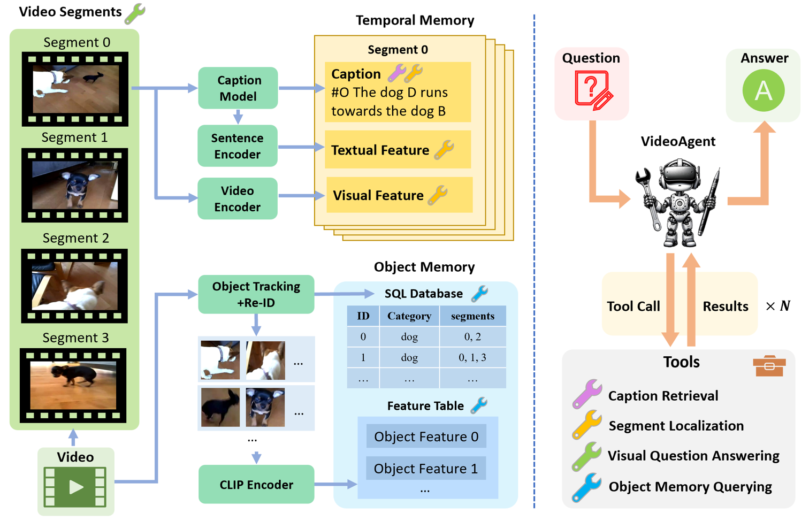
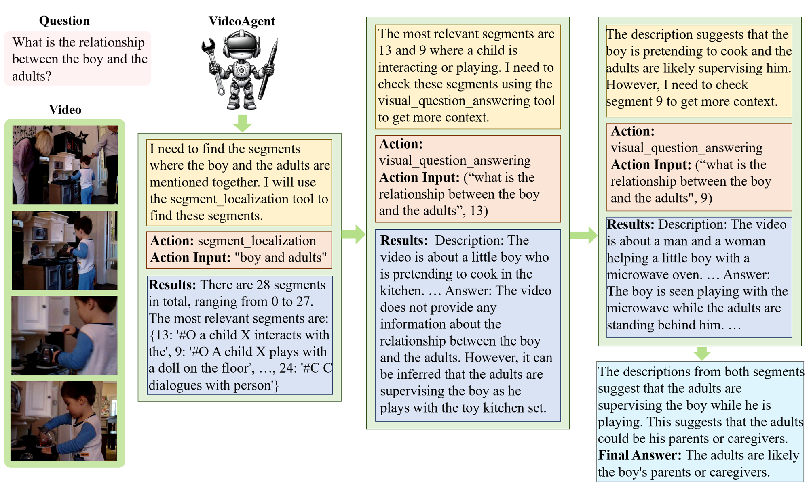

Abstract
We explore how reconciling several foundation models (large language models and vision-language models) with a novel unified memory mechanism could tackle the challenging video understanding problem, especially capturing the long-term temporal relations in lengthy videos. In particular, the proposed multimodal agent VideoAgent: 1) constructs a structured memory to store both the generic temporal event descriptions and object-centric tracking states of the video; 2) given an input task query, it employs tools including video segment localization and object memory querying along with other visual foundation models to interactively solve the task, utilizing the zero-shot tool-use ability of LLMs. VideoAgent demonstrates impressive performances on several long-horizon video understanding benchmarks, an average increase of 6.6% on NExT-QA and 26.0% on EgoSchema over baselines, closing the gap between open-sourced models and private counterparts including Gemini 1.5 Pro. The code will be released to the public.
TL;DR: We propose VideoAgent, a LLM agent that understands videos by using a strutured memory and 4 tools.
Method
Given a video and a question, VideoAgent has two phases: memory construction phase and inference phase. During the memory construction phase, structured information is extracted from the video and stored in the memory. During the inference phase, a LLM is prompted to use a set of tools interacting with the memory to answer the question.
VideoAgent has a temporal memory and an object memory. By slicing the video into 2-second segments, the temporal memory is designed to store the event descriptions of these segments generated by a video captioning model. Besides, the textual features and visual features of these segments are also stored in the temporal memory for similarity-based segment localization in the inference stage. The object memory stores all the objects with their information in a SQL database including: categories, CLIP features, and their appearing segments. The object information is achieved by object tracking with a unique re-identfication method proposed in this paper.

During the inference stage, 4 tools can be utilized by the LLM to gather video information required to answer the question. The 4 tools are:
- Caption Retrieval: given a start segment and an end segment, retrieve all the captions (15 captions at most) of the segments between them from the temporal memory.
- Segment Localization: given a text query, locate the relevant segments according to the similarities between the query feature and the segment features stored in the temporal memory.
- Visual Question Answering: given a question and a target video segment, it will use a video LLM to describe what happened in this short video segment and answer the question.
- Object Memory Querying: given an object(person)-related question, it will retrieve the information from the object memory to answer the question.
The LLM agent will perform multiple steps towards the final answer. In each step, it will invoke a tool to gather information based on its reasoning and the results of the preivous steps. An example can be found as follows.
